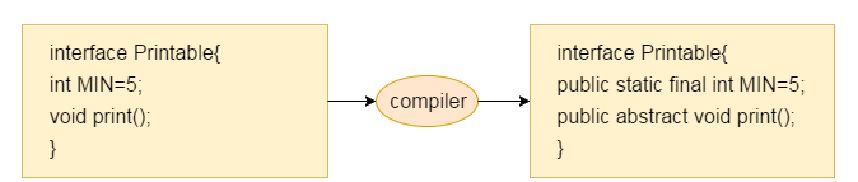
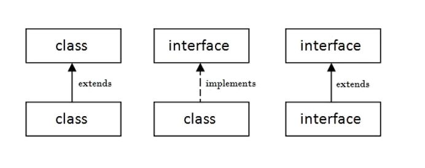
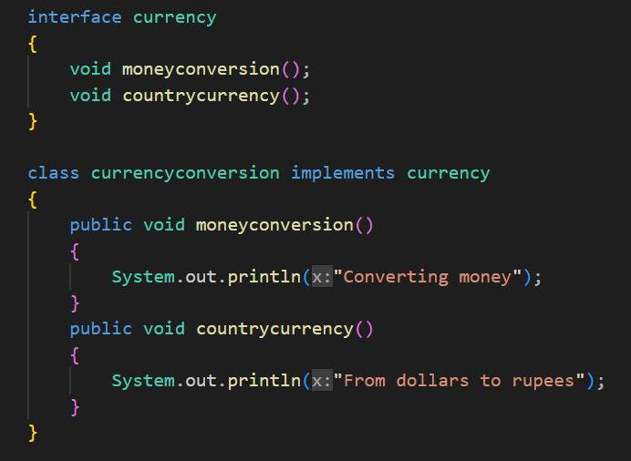
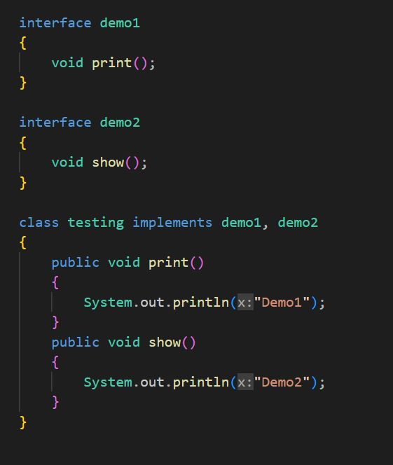

An interface in Java programming language is defined as an abstract type used to specify the behavior of a class. It is a mechanism to achieve abstraction.
An interface is just like a class which contains only abstract methods.
- Interface methods are by default public and abstract.
- Interface variables are by default public, static and final.

In Java, interfaces can be implemented and extended to create new interfaces that inherit properties and methods from existing interfaces.

Extending an interface
An interface can extend other one or more interfaces.
Syntax:

It can be used to achieve multiple inheritance.

Implementing an interface
A class can implement more than one interface.
Syntax:

Note: A class that implements the interface must implement all the methods in the interface.
Advantages of Interfaces in Java
- Interfaces provide a way to abstract the implementation details of a class from its public interface. This allows the class to be used in a variety of different contexts without exposing its internal workings.
- In Java, multiple inheritances is not allowed, however, you can use an interface to make use of it as you can implement more than one interface.
- Interfaces enable loose coupling between different parts of an application. By depending on interfaces rather than concrete classes, different parts of the application can be developed independently and can be easily swapped out or replaced as needed.
- Interfaces allow different classes to implement the same interface, which enables polymorphism. This means that objects of different classes can be treated interchangeably if they implement the same interface.
Differences between Abstract classes and Interfaces in Java
- Interface contains only abstract method, while abstract class contains both as abstract and non-abstract methods.
- Interface supports multiple inheritance, while abstract class does not support multiple inheritance.
- By default interface methods are public and abstract but there are no such restrictions on abstract class method modifiers.
- Interface does not allow users to create constructors, while abstract class allows constructors.
Points to keep in mind while using Interfaces
- It is not possible to declare instance variables inside the interface because variables are public static final by default.
- Constructors and main method are not allowed inside the interface
- Static, final, private methods declaration are not possible inside the interface.
Conclusion
Interfaces are a powerful tool in programming that allow for features like abstraction, polymorphism and loose coupling. By using interfaces, developers can create more flexible and maintainable code that is easier to test and debug, and improve the overall design and structure of an application.